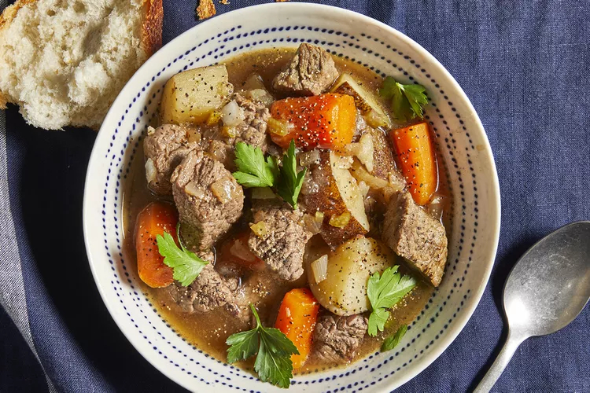

Home
Slow Cooked Beef Stew

This slow cooker beef stew is the perfect low maintenance meal for chilly fall and winter nights.
Full of cozy flavor and hearty ingredients, this beef stew recipe will warm you up from the inside out.
Ingredients
- Stew Meat
- Flour
- Seasonings
- Broth
- Vegetables
Steps
- Place meat in slow cooker.
- Mix flour, salt, and pepper together in a small bowl. Pour over meat, and stir until meat is coated
- Add beef broth, carrots, potatoes, onion, celery, Worcestershire sauce, paprika, garlic, and bay leave; stir to combine
- Cover, and cook until beef is tender enough to cut with a spoon, on Low for 8 to 12 hours, or on High for 4 to 6 hours